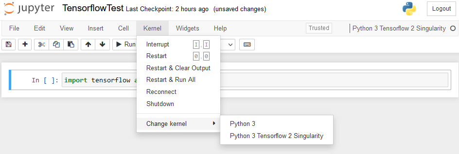

Using your Singularity Container with Open OnDemand
In this how-to we’ll make a singularity container accessible through Open OnDemand on Atlas. This allows for code on the HPC to be run in the same environment used for development locally. To do this, we’ll specify a new jupyter kernel that Open OnDemand will connect to.
Setup
This document assumes you have a pre-built Singularity container (.sif) on Atlas. Using a custom container is recommended, but there is at least one container on Atlas that could be used (e.g. /reference/containers/jupyter-tensorflow/jupyter-tensorflow-2.2.0.sif). Note that your container should include Jupyter.
- Create a symbolic link between your home directory and the project data directory.
cd ~
ln -s /projects/the_labs_project/your_directory- Create a directory to hold your container(s)
mkdir ipython_containersUse Globus to transfer your container to this folder. In this example, my container is called
tensorflow-21.07-tf2-py3.sif.Setup a kernel for your container. This will create configuration files that we will customize. They will be in a folder in
.local/share/jupyter/kernels/.
module load python
python3 -m ipykernel install --user --name singularity-tf2py3 --display-name "Python 3 Tensorflow 2"- Customize kernel configuration. Open the new kernel configuration json in in your preferred text editor.
vim .local/share/jupyter/kernels/singularity-tf2py3/kernel.json- Edit the existing file so that it looks like the below. Be sure to edit the container path so that it has your container and username and the
display_nameso that your container is recognizable.
{
"argv": [
"/apps/singularity-3/singularity-ce-3.11.0/bin/singularity",
"exec",
"--nv",
"-B",
"/project",
"-B",
"/90daydata",
"-B",
"/reference",
"-B",
"/local/scratch",
"/home/user.name/ipykernel_containers/tensorflow-21.07-tf2-py3.sif",
"/usr/bin/python3",
"-m",
"ipykernel",
"-f",
"{connection_file}"
],
"interrupt_mode": "message",
"display_name": "Python 3 Tensorflow 2 Singularity",
"language": "python"
}Usage
Log into Open OnDemand and begin a Jupyter session.
Select “Kernel” and “Change kernel”. Select your newly defined kernel.

Once the kernel starts all your code will be executed in the container!

Other Considerations
Some containers (see below) use a python other than /usr/bin/python3 as the default python. This will cause ipykernel to not be found when executed. The solution is to check the location of the default python in the container like so:
singularity exec container.sif which pythonNote the location and correct the path in kernel.json. In the case of the container created with the below .def file the path is /opt/conda/bin/python.
Bootstrap: docker
From: pytorch/pytorch:2.0.1-cuda11.7-cudnn8-runtime
%post
apt-get update
apt-get upgrade -y
ldconfig
apt-get install -y python3-pip
pip3 install --upgrade pip
echo 'ipykernel==6.15.1
ipython==8.4.0
ipython-genutils==0.2.0
ipywidgets==7.7.1
jupyter==1.0.0
jupyter-client==7.3.4
jupyter-console==6.4.4
jupyter-core==4.11.1
jupyter-server==1.18.1
jupyterlab==3.4.4
jupyterlab-pygments==0.2.2
jupyterlab-server==2.15.0
jupyterlab-widgets==1.1.1
nbclassic==0.4.3
nbclient==0.6.6
nbconvert==6.5.0
nbformat==5.4.0
notebook==6.4.12' > requirements.txt
pip3 install -r requirements.txtReferences
This was inspired by this MSI article and done with the help of James Huston Rogers at MSU. For cases where port forwarding is allowed (remote machines and some HPCs ) that will easier.